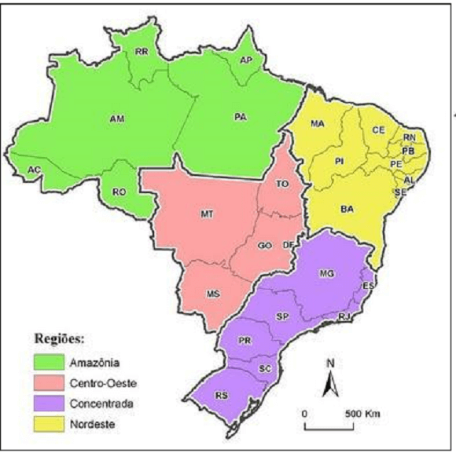
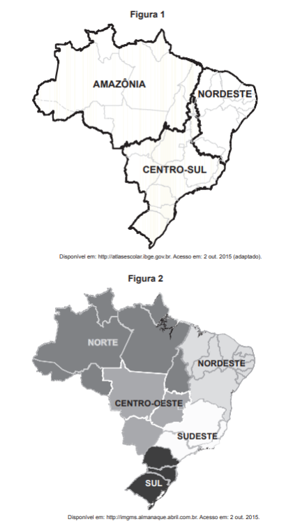
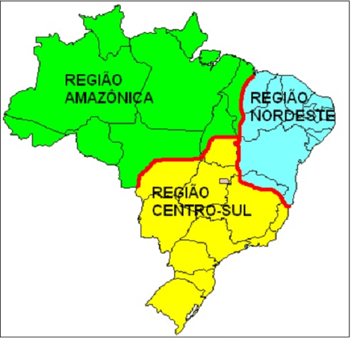

Conteúdo: : Integração nacional; Modernização seletiva; Divisão regional IBGE, técnico-científica e Geoeconômica;
Objetivo: Entender o processo de regionalização do território brasileiro, seus objetivos e suas diferenças.
Questão 01
(UECE 2018) Considerando dados e informações relativos ao sistema regional do Brasil, assinale a afirmação verdadeira.
a) As dinâmicas espaciais das regiões Norte e Centro-Oeste do Brasil sintetizam tempos e espaços diferenciados: a primeira é marcada pela circulação fluvial e rodoviária que abre clareiras na floresta; e a segunda é definida pelo papel do moderno agronegócio.
b) Na região Sudeste do país, dadas as características históricas e geográficas de seu desenvolvimento, a distribuição da população apresenta estrutura dispersa, sem efeito significativo de aglomeração demográfica nos maiores centros urbanos metropolitanos.
c) A região Sul do Brasil corresponde ao núcleo original da industrialização, fenômeno que justifica estar nas capitais dessa região a maior centralidade exercida pelo mercado financeiro.
d) Na região Nordeste do país, é flagrante a transformação causada pelo dinamismo econômico que fortaleceu as cidades médias em detrimento do tradicional papel central das metrópoles.
Questão 02
(UNESP 2018) Na década de 1960, Pedro Pinchas Geiger elaborou uma nova regionalização do espaço brasileiro, estabelecendo três grandes regiões – Centro-Sul, Nordeste e Amazônia – segundo critérios relacionados.
a) aos limites estaduais e às características morfoclimáticas.
b) à formação socioespacial e aos limites estaduais.
c) às características morfoclimáticas e aos aspectos socioeconômicos.
d) aos aspectos socioeconômicos e às heranças do passado.
e) às características naturais e à formação socioespacial
Comentário:
A divisão proposta por Geiger,1960 contempla concomitantemente os aspectos físicos da base material (relevo/morfologia, clima, vegetação e hidrografia) de cada região; seu processo de evolução demográfica (povoamento e distribuição da população) e de apropriação econômica, com a implantação de infraestrutura.
Questão 03
(UNICESUMAR-SP 2015) Entre os motivos oficiais da construção de Brasília e da transferência da Capital Federal, durante o governo Juscelino Kubitschek (1956-1961), podemos citar a disposição de.
a) aumentar a proteção militar da Amazônia e das fronteiras com os países hispano-americanos.
b) estimular a indústria de base e a pecuária nas áreas próximas à nova sede do governo.
c) ampliar a oferta de mão de obra industrial e a mobilização do operariado no centro do país.
d) incentivar a ocupação do centro do Brasil e a integração política e econômica do país.
e) oferecer menor liberdade e autonomia para a atuação dos deputados e senadores.
Questão 04
(UEMS 2009) - Os geógrafos Milton Santos e Maria Laura Silveira propuseram em 2001 a seguinte divisão regional para o território brasileiro:

Fonte: SANTOS, Milton; SILVEIRA, Maria L. O Brasil: território e sociedade no início do século XXI. Rio de Janeiro: Record, 2001.
Sobre a divisão regional brasileira exposta no mapa, é correto afirmar que:
a) devido à complexa realidade territorial do Brasil na atualidade, esta divisão regional leva em consideração, principalmente, a densidade das técnicas e a velocidade da difusão de informações.
b) é errônea, pois não respeita a divisão regional estabelecida pelo IBGE em 1970 que distingue as regiões sul e sudeste.
c) a Região Nordeste caracteriza-se pela implantação mais consolidada dos dados da ciência, da técnica e da informação.
d) a Região da Amazônia caracteriza-se por alta densidade demográfica e atualmente conta com uma densa rede de transportes e comunicação.
e) não há diferenças significativas entre a Região Concentrada e a Região Nordeste no que diz respeito às redes de transporte e comunicação.
Questão 05
(ENEM 2018) No planejamento das ações governamentais, a segunda forma de regionalização apresenta a vantagem de

a) respeitar a divisão político-administrativa.
b) reconhecer as desigualdades sociais.
c) considerar as identidades culturais.
d) valorizar a dinâmica econômica.
e) incorporar os critérios naturais.
A segunda forma de regionalização é a divisão regional do IBGE, criada em 1969. Esta divisão utiliza critérios físicos e socioeconômicos, dividindo o Brasil em 5 regiões com o agrupamento de estados. A divisão utiliza fronteiras estaduais ao traçar as divisas entre as regiões, portanto, é adequada para fins administrativos e divulgação de dados estatísticos sobre o país.
Questão 06
(UEPG 2007) Com relação ao Centro-Sul, uma das regiões geoeconômicas do Brasil, assinale o que for correto.
01) Representa a região de ocupação mais antiga do país, sendo que durante três séculos foi a região mais rica e povoada do país, tendo a cana-de-açúcar como a principal riqueza do Brasil Colônia.
02) As práticas mais modernas da agropecuária encontram-se nessa região, especialmente no interior de São Paulo, Rio Grande do Sul e Minas Gerais.
03) É a região mais povoada, urbanizada e industrializada do país, representada pelas importantes áreas industrializadas da Grande São Paulo, Grande Rio de Janeiro, Grande Belo Horizonte e Grande Porto Alegre.
04) É a maior das três regiões geoeconômicas em extensão, seguida pelo Nordeste e pela Amazônia.
05) Aí se registram as mais constantes lutas pela posse de terras envolvendo posseiros, indígenas, grileiros, empresas e até o Estado.
a) FVFVV.
b) FVVFV.
c) FFVFF.
d) VFFVF.
e) FFVVF.
Questão 07
(FUVEST 1998) A divisão do território brasileiro em 3 grandes complexos regionais - Amazônia, Nordeste e Centro-Sul - tem a vantagem de caracterizar.
a) a Amazônia, com seus recursos explorados a partir de um planejamento global do Estado.
b) o Nordeste, como um polo de atração demográfica, em decorrência do turismo.
c) o Centro-Sul, como região socioeconômica de poucos contrastes internos.
d) a homogeneidade econômica no interior de cada complexo, do ponto de vista agropecuário.
e) a especialidade do processo socioeconômico, considerando a gênese histórica de cada complexo.
Questão 08
(PUC-RJ 1998) O mapa representa a divisão do território brasileiro em três grandes regiões ou complexos geoeconômicos.

Qual(is) texto(s) abaixo apresenta(m) corretamente características dominantes nesses complexos nas últimas décadas?
I – O Centro-Sul destaca-se como o centro econômico de maior dinamismo, gerando cerca de 80% da renda nacional. Nele estão presentes intensos fluxos de mercadorias, da força de trabalho e de capitais.
II – O Nordeste individualiza-se pela repulsão populacional e pela disseminação da pobreza. A estrutura fundiária altamente concentrada tem dificultado seu desenvolvimento.
III – O Complexo Amazônico destaca-se pelo processo de ocupação recente, ligado aos grandes projetos agropecuários e minerais. A construção de rodovias inter-regionais acelera a integração da nova fronteira ao centro nacional dinâmico representado pela Região Sudeste.
a) se apenas o texto III.
b) se apenas o texto II.
c) se apenas o texto I.
d) se os textos I, II e III
e) se apenas os textos I e II.
Questão 09
(UCPEL 2013) A proposta de divisão regional do Brasil em regiões geoeconômicas utiliza critérios geográficos e econômicos em que os limites das regiões não coincidem, necessariamente, com os dos estados.
Analise as seguintes afirmativas sobre a região geoeconômica brasileira.
I. Distribui-se por nove estados brasileiros, apresenta, relativamente, pequena população absoluta, baixíssima densidade demográfica e tem, no quadro natural, uma das suas principais características.
II. Concentra cerca de 30% da população do país, é marcada por acentuados contrastes naturais, é composta por sub-regiões bem delimitadas.
III. Inclui as duas porções mais industrializadas do país, possui grandes problemas sociais, principalmente, nas grandes cidades e concentra cerca de 60% da população brasileira.
Os textos das afirmativas se referem, respectivamente, às seguintes regiões geoeconômicas:
a) Amazônia, Norte e Centro-Sul.
b) Nordeste, Norte e Sul.
c) Nordeste, Centro-Sul e Amazônia.
d) Amazônia, Norte e Sul.
e) Amazônia, Nordeste e Centro-Sul.
Questão 10
(UEL 2001)
"O geógrafo Pedro Pinchas Geiger propôs, em 1967, a divisão regional do Brasil em três regiões geoeconômicas ou complexos regionais (...). Essa divisão regional tem por base as características geoeconômicas e a formação histórico-econômica do Brasil. (...)"
(ADAS, M. "Geografia: o Brasil e suas regiões geoeconômicas". São Paulo: Moderna, 1996. p. 52 e 67.)
Aos complexos regionais da Amazônia, do Nordeste e do Centro-Sul, propostos por Geiger, podem-se atribuir, respectivamente, as seguintes caracterizações:
a) Povoado no período colonial - industrializado - de baixa densidade demográfica.
b) De agricultura tecnificada - de atração de mão de obra - de predomínio de população rural.
c) De pequenas propriedades rurais - de industrialização tradicional - de economia extrativa.
d) de expansão da fronteira agrícola - colonizado através da economia açucareira – o mais industrializado e urbanizado.
e) De integração dos povos da floresta - de economia agropecuária moderna - de expulsão de mão de obra.